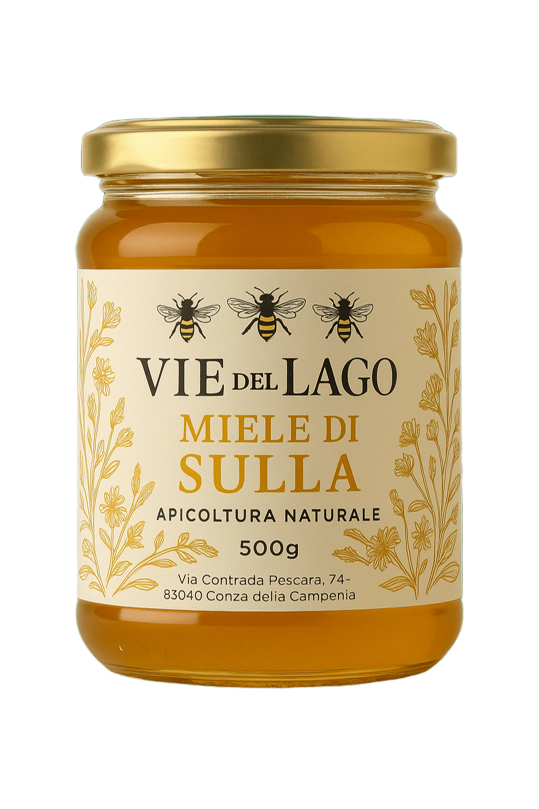

Descrizione
Il miele di Sulla ha colore chiaro, aroma leggero e un gusto dolce e vellutato. È ricco di proprietà benefiche ed è particolarmente apprezzato dagli intenditori.
Informazioni
- Peso
- 500 g
- Ingredienti
- 100% miele italiano
- Conservazione
- Tenere in luogo fresco e asciutto
- Consigli
- Perfetto con formaggi stagionati o per dolcificare tisane